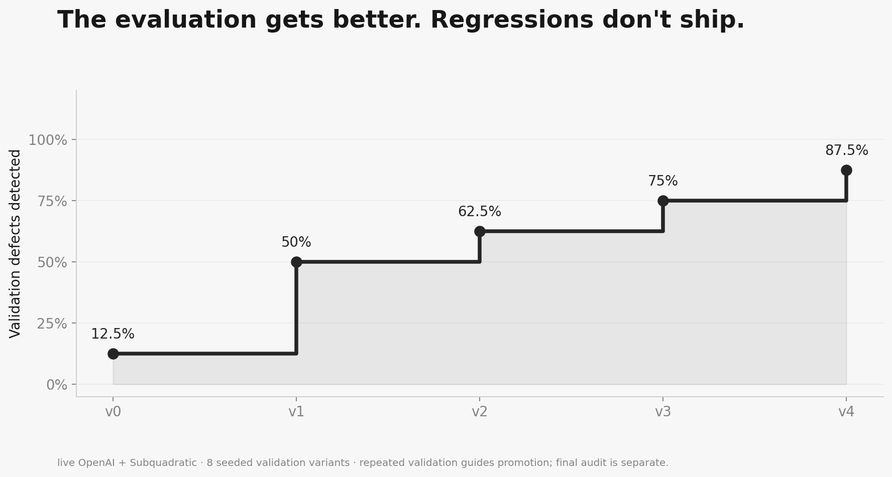

Your tests passed.
Your software failed.
CrossExam finds broken software your evaluation accepts, produces a reproducible counterexample, and proves whether stronger tests help on different implementations.
Recorded product demonstration · ElevenLabs V4 / Brian narration · subtitles · synthetic benchmark, with limitations disclosed
What changes after the counterexample?
Each proposed suite is frozen before evaluation. A promotion requires new defect detections, no lost coverage, and no false rejection of a correct control. The final audit is opened after learning finishes.
